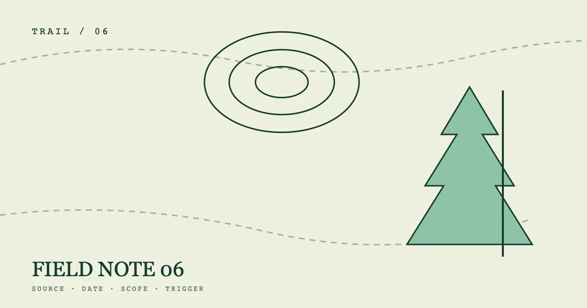

OBSERVATION 06%%P06_EYEBROW%%
%%P06_TITLE%%
%%P06_SUMMARY%%- 编写
- %%AUTHOR_NAME%%
- 发布
- 复核

展开路线标记
%%P06_SECTION_LABEL_1%%
%%P06_H2_1%%
%%P06_BODY_1_A%%
- 01%%P06_MODULE_1%%%%P06_MODULE_5%%
- 02%%P06_MODULE_2%%%%P06_MODULE_6%%
- 03%%P06_MODULE_3%%%%P06_MODULE_7%%
- 04%%P06_MODULE_4%%%%P06_MODULE_8%%
%%P06_BODY_1_B%%
%%P06_SECTION_LABEL_2%%
%%P06_H2_2%%
%%P06_BODY_2_A%%
%%P06_BODY_2_B%%
%%P06_SECTION_LABEL_3%%
%%P06_H2_3%%
%%P06_BODY_3_A%%
%%P06_BODY_3_B%%
%%P06_SECTION_LABEL_4%%
%%P06_H2_4%%
%%P06_BODY_4_A%%
%%P06_BODY_4_B%%
%%P06_FAQ_TITLE%%
%%P06_FAQ_Q_1%%
%%P06_FAQ_A_1%%
%%P06_FAQ_Q_2%%
%%P06_FAQ_A_2%%